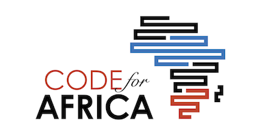

Sign up for updates
CodeForAfrica is building sustainable open data ecosystems in Africa. We are harnessing local resources to create the culture, infrastructure, partnerships and applications which will deliver indigenous data driven solutions to the challenges citizens grapple with.
The programs CodeForAfrica is supporting at the national level are embedding change agents in organizations where they work in key sectors such as health, education and water. They work with their host organizations to help create use cases, local partnerships around the data and a culture of data-driven value addition so that citizens have a voice and can act in their own best interests.
CodeForAfrica is already working in 3 countries this year. Code4Kenya is the pilot program that ran in 2012 and was launched as a full scale program in January 2013. Code4Ghana and Code4SouthAfrica are in the mobilization stages and will launch soon.
Code4Africa is building out the infrastructure necessary for open data to flourish in African countries. This shared infrastructure includes projects like Open Africa, actNOW and openDuka which through their APIs will allow infomediaries to build services with local relevance.
Government or corporate open data in many instances requires context for citizens to use it in solving real world problems. Through the work Code4Africa's programs are doing, use cases for open data are emerging which provide important clues to areas future programs can focus on. Some of the use cases that have emerged so are: